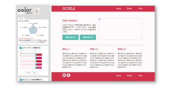

Sugasaki Aoi
菅崎 葵
知能システムコース
色彩ツールを作っています
ウェブページの色彩調整システムの提案
研究内容
サイトの大事な要素である配色に起因するユーザへの認知的ストレスを無くすためにもサイト作成者が読みやすい見やすい配色を意識する事は必要不可欠です。私の研究では色彩の非専門家にウェブ配色に関する知識や理論を提供するための色彩支援ツールの提案を行っています。

研究室のポイント
デザインがやりたい！でも自分でサービスを作ってみたい、何でも出来るようになりたい、という方には持ってこいの研究室です。やりたい事をすぐに実現出来るし、先生が手厚く指導してくれる点はどの研究室よりも自慢出来ます。
用いるスキル
Ruby JavaScript CSS HTML 色彩知識
卒業後の進路
ウェブサービスの企画やデザインをやります。ふなっしーのCMで有名なあのサービスです！
後輩にメッセージ
自分が時間を忘れて夢中になれること！それをテーマにするのが１番楽しいです。